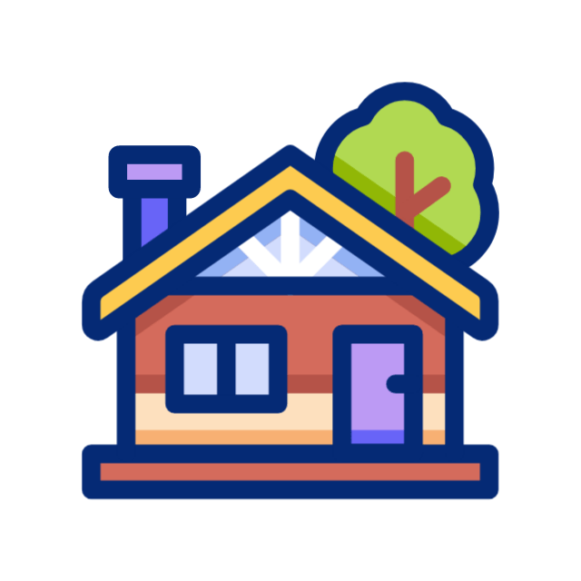
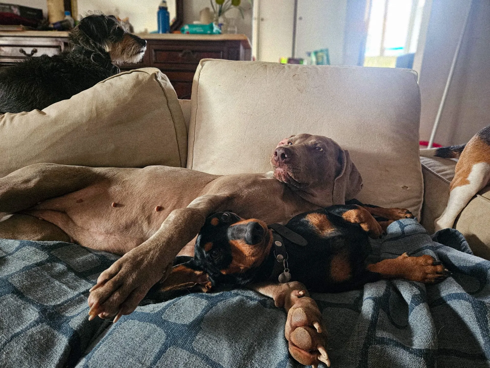
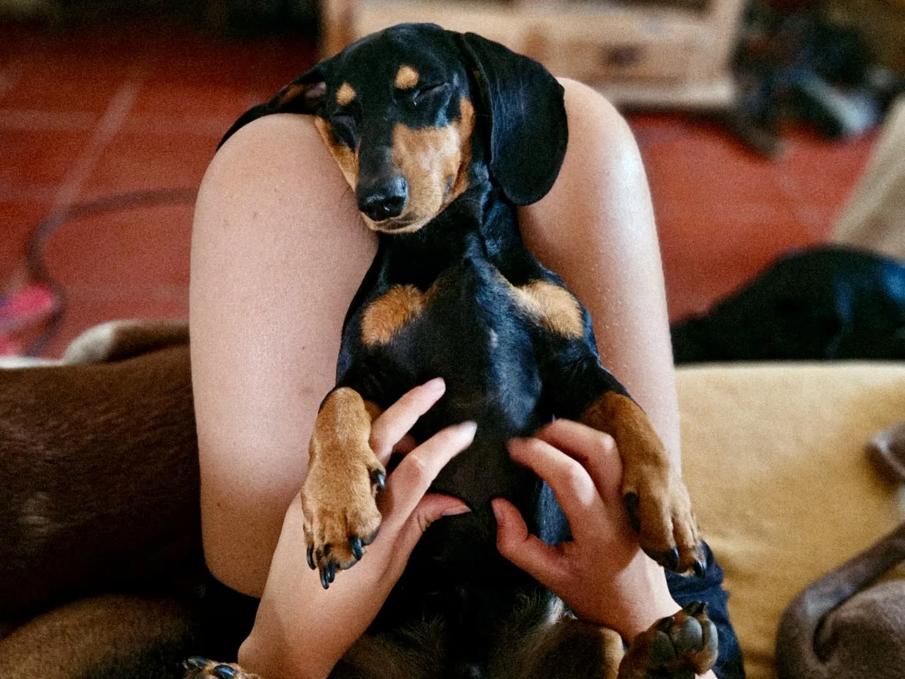
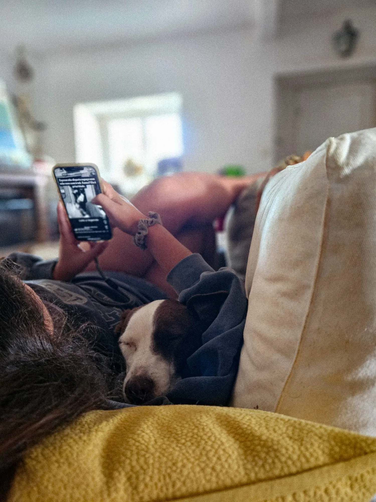

Estadias Familiares

O teu cão fica em casa de família, com todo o carinho e atenção que merece

O que significa estadia familiar?
A estadia é feita na habitação própria das tias (Lisboa), onde o cão é integrado como família, com muito amor à mistura.

Qual a rotina?
No período de segunda a quinta, o teu cão vai frequentar a nossa creche e fazer passeios na natureza.
Ao fim de semana tiramos proveito da mãe natureza e percorremos trilhos, ribeiros, praias.
Algo que não abdicamos: DESCANSO e MIMO.

Horário de entrada
As entradas para estadia são realizadas pela manhã, em horário previamente combinado para garantir uma receção tranquila e personalizada ao teu cão.
Pedimos que respeite este horário para facilitar a adaptação e o bem-estar do animal desde o primeiro momento.
Onde fica o meu cão no período da noite?
Não, não fica numa box no exterior. O teu cão é livre de descansar em qualquer divisão interior da nossa casa (sofá, camas, etc).